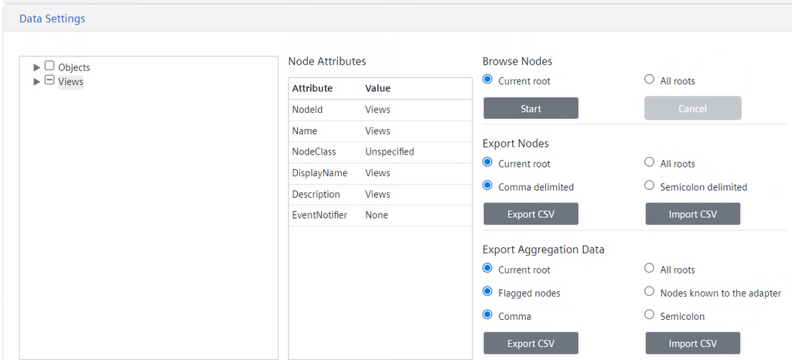

Export Configuration Data

Before proceeding with the export, you may want to manually set data aggregation at least for one node in the Data Aggregation Export section. This might help editing the configuration file later.
- In Data Settings, select the desired root node (Objects or Views).
- Under Export Aggregation Data, you can specify the export details.

- Set from which roots data is to be exported:
- Current root (default; Objects or Views)
- All roots (both Objects and Views)
- Set which nodes are to be exported:
- Flagged nodes (default)
- Nodes known to the adapter
NOTE: The adapter knows only nodes that were browsed at least one time. - Set the delimiter to be used in the file to be exported:
- Comma
- Semicolon
- Click Export CSV.
- If prompted to save the changes, click Save in the indicated section, and click again Export CSV.
- In the Save As dialog box, replace the predefined file name (AggregationConfiguration.csv) with a new one to save the setting in a new file. Alternatively, select an existing file to overwrite its configuration. Then click Save.
- Click OK.